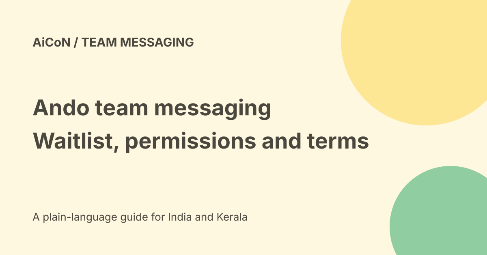

Ando: agent messaging, waitlist and pricing boundaries
Ando is a team messaging platform designed for humans and AI agents to share channels, threads and conversations. Its current FAQ directs teams to a waitlist. The pricing page describes a per-human-seat philosophy, not a quoted plan or unlimited agent usage. A launch announcement is not proof of general access for your team.

What the platform changes
The launch describes agents with their own identity, permissions and shared context, rather than only a bot summoned for a single reply.
An agent participating in a channel still needs a clear purpose, allowed sources and action limits. Being a member does not authorise every message, file or decision.
Bring existing agents
The release calls Ando agent-agnostic and names several outside agents. The FAQ says developer interfaces, including MCP, support external agents.
It also warns that connecting tools does not keep a local runtime awake. The agent needs a way to receive work and remain available. Messaging integration and reliable execution are separate requirements.
Live conversations and Jams
The release describes shared conversations where agents and people can work together. This is intended to support ongoing team work rather than only isolated question-and-answer sessions.
A proactive contribution can still be wrong, distracting or outside the channel's audience. Define when an agent should speak and when it should wait for a person.
Access remains a waitlist route
The current FAQ says to use Get access to join the waitlist and provide team details. No instant account entitlement was verified.
No waitlist submission, workspace invitation or agent connection was made for this guide. Do not treat the company launch as proof that every Indian team can start immediately.
Pricing philosophy is not a contract
The pricing page says the intended approach is per human seat, aiming to encourage agent participation without making teams count every conversation.
It explicitly says this is not a plan or usage entitlement. No public rate, final INR price or promise of unlimited messages, compute or third-party services is given there.
External costs
Bringing an outside agent can involve its own model, hosting and service terms. Ando's per-seat philosophy does not establish who pays those bills.
Ask for the actual onboarding offer, included usage, limits, renewal terms and provider responsibilities. Do not advertise free agents merely because they are not described as human seats.
Slack migration is not everything
The FAQ recommends a pilot and reviewing Slack sync documentation for supported conversations and migration limits. It says not to assume every channel or direct message is imported.
Check source permissions and the intended audience before copying conversation history. A sync feature does not create consent to widen the audience of an old private discussion.
A small team pilot
- Confirm accepted access and actual onboarding terms.
- Choose a limited project and approved participants.
- List the content the workspace may receive.
- Check roles, agent identities and access controls.
- Connect only the required external agent capabilities.
- Verify runtime availability and error handling.
- Test a private-content denial and a wrong-action request.
- Review logs, messages and costs.
- Expand only after the pilot meets the team's needs.
No actual workspace or migration was tested.
Funding and product proof
The company-issued release announces twenty million dollars in seed funding. Funding is a company event, not a product-quality test, service-level guarantee or customer licence.
The launch's claims about adoption and collaboration should remain attributed to the company. We did not independently audit team use.
India and data questions
No Indian hosting region, tax-inclusive local tariff, regional checkout or Malayalam performance was verified. Ask about retention, exports, subprocessors and account closure for the proposed workspace.
People remain responsible for judgment and important decisions, as the FAQ itself says. Keep approvals for external communications and consequential changes.
What changed since the original post?
We add current waitlist access, distinguish pricing philosophy from a plan and preserve the runtime and Slack-sync limits. Agent membership does not mean unlimited capability or authority.
Frequently asked questions
Is there a public final price?
Not on the checked pricing page.
Does tool connection keep my local agent running?
The FAQ says no.
Was a workspace created?
No.
Sources: Company-issued launch · Current FAQ and access · Pricing philosophy and explicit limits. Checked 7 October 2026.